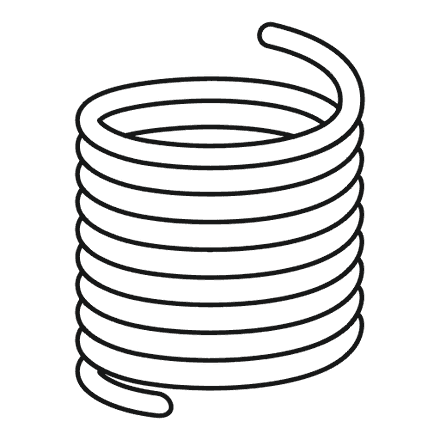

TinkerVision
Leistungen
Egal ob am Anfang nur eine Idee steht oder ein vorhandenes, beschädigtes Bauteil ersetzt oder verändert werden soll: von der Zeichnung bis zum Produkt finden Sie hier die passende Unterstützung für Ihr Projekt.
Individuell · praxisnah · persönlich
Aus Krummhörn bei Emden (Ostfriesland) – für Kunden aus der Region und deutschlandweit.
Technische Zeichnungen Standardisierte Zeichnungen — von der groben Skizze bis zur Bauanleitung.
Zeichnungen von einzelnen Objekten oder ganzen Gruppen: als grobe Skizze, als ausführliche Bauanleitung oder als grafische Darstellung. Sie entstehen aus vorhandenen Teilen oder begleitend im Projekt, zusätzlich zum Hauptprodukt.
3D-Scans Vorhandenes Teil digitalisieren, wenn Zeichnung oder CAD fehlen.
Handgeführter Scan mit strukturiertem Licht (Blau und Infrarot). Typische Genauigkeit bis etwa 0,02 mm an kleinen, gut erfassten Flächen. Objektgröße grob von 1 cm bis etwa 2 m. Farbe/Textur ist möglich. Sehr glänzende oder tiefdunkle Flächen brauchen oft eine matte Schicht, sonst reißt die Erfassung ab. Physische Objekte werden ausschließlich per DHL-Paket angenommen. Der Versand muss vorher über das Kontaktformular beantragt werden und erfolgt auf Kosten des Kunden.
Parametrische 3D-Dateien Standardisierte 3D-Dateien in gängigen Formaten — auf Wunsch druckfertig.
Parametrische, standardisierte 3D-Dateien in den üblichen Formaten. Auf Wunsch wird die Datei auf den vorhandenen Drucker abgestimmt, inklusive angepasstem G-Code, damit die Druckqualität stimmt. Darüber geht Individualisierung: mehrfarbig, mehrere Werkstoffe, Relief, Schrift, Personalisierung.
FEM-Analyse Ob das Teil unter Last hält — grobe Prüfung am CAD, bevor gefertigt wird.
Statische Betrachtung von Spannung und Verformung am Modell: typische Lagerung, Last und Werkstoff. Sinnvoll vor dem ersten Druck oder der Fräsung, wenn unklar ist, ob Rippen, Wandstärke oder Lage der Schrauben reichen.
Vom Prototypen zur Sonderanfertigung Erst prüfen, dann das Stück, das bleiben soll.
Der Prototyp ist zum Lernen da: sitzt es, hält es, fühlt es sich richtig an. Was nicht stimmt, geht zurück ins Modell. Die Sonderanfertigung kommt nach der Freigabe — ein Stück oder wenige, in FDM, SLA oder auf der 3-Achs-Fräse. Wer nur die Datei braucht, bekommt die Datei.
Häufige Fragen
Was muss ich zur Anfrage mitschicken?
Kurz das Ziel (passt, ersetzt, wird gedruckt, wird gefräst), vorhandene Dateien oder Fotos, ungefähre Größe und Werkstoff, plus Termin wenn es einen gibt. Unvollständige Angaben sind in Ordnung — Nachfragen kommen über das Kontaktformular.
Welche Dateiformate bekomme ich?
Was der Folgeprozess braucht. Üblich: STEP und IGES für CAD-Weitergabe, STL und 3MF für Druck, OBJ, DXF/SVG/DWG für 2D und Laser, Zeichnung als PDF. Weitere gängige Formate auf Anfrage.
Ist das dasselbe wie die Shop-Modelle?
Nein. Cults3D und Printables sind fertige Downloads. Die Leistungen hier sind Aufträge: eigenes Teil, Scan, Zeichnung oder Anpassung. Shop-Dateien eignen sich, wenn ein vorhandenes Modell reicht.
Wie läuft ein Auftrag ab — und was kostet es?
Anfrage über Kontakt, Klärung von Umfang und Lieferumfang, Konstruktion oder Scan, Freigabe, danach Dateien und — falls gewünscht — Prototyp in FDM, SLA oder 3-Achs-CNC. Preise ausschließlich auf Anfrage. Änderungen nach der Freigabe sind ein neuer Schritt.
Folgende Filamente stehen aktuell für das Prototyping zur Verfügung. Bei Bedarf bitte in der Anfrage angeben.
FDM — Filamente
PETG Für Teile, die etwas aushalten: Gehäuse, Halter, Alltagsgegenstände. Zäher als PLA, verträgt Feuchte und viele Haushaltsstoffe besser.

Weiß
PLA Für Anschauungsstücke, Passproben und Teile, die vor allem gut aussehen sollen. Steif und detailreich — nicht für starke Hitze, Stöße oder dauerhaftes Draußen.
Tannengrün
TPU Für alles, das sich biegen oder federn soll: Dichtungen, Puffer, Clips, weiche Auflagen. Härte je nach Sorte — in der Anfrage sagen, wie weich das Teil sein soll.
Digitalblau